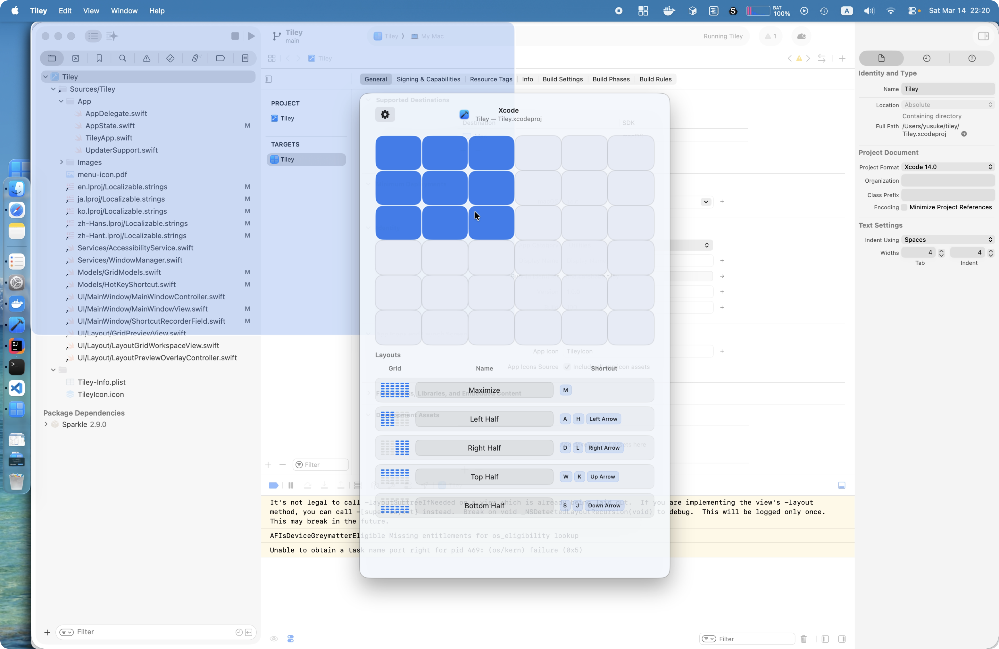

轻松排列窗口的 macOS 工具。拖动网格，放置窗口。

在网格上选择区域来平铺窗口。
可自定义的网格显示在屏幕上。拖动选择要放置窗口的区域。
通过可自定义的键盘快捷键，即时显示网格或应用布局预设。
保存常用布局——左半屏、右半屏、最大化等——一步即可应用。
使用 Swift 和 AppKit 为 Apple Silicon 原生构建。快速、高效，完美适配您的 Mac。
调整行数、列数和间距，适配您的工作流程和显示器设置。
通过 Sparkle 内置更新检查功能，自动保持最新版本。
按下全局快捷键或点击菜单栏图标，显示布局网格。
在网格上拖动，定义要放置窗口的区域。
最前台的窗口将立即移动并调整大小以适应您的选择。
一键打开网格叠层。
Tiley 需要 macOS 14（Sonoma）或更高版本。
macOS 要求辅助功能权限才能移动和调整其他应用的窗口大小。Tiley 仅将辅助功能 API 用于窗口管理，不会收集任何数据。
可以。从菜单栏打开设置，调整行数、列数和单元格间距。
可以。每个布局预设（最大化、左半屏等）都可以在设置中分配独立的全局快捷键。
是的，Tiley 是免费开源软件。源代码可在 GitHub 上获取。
免费、开源、macOS 原生。
下载最新版本